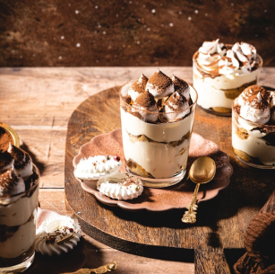
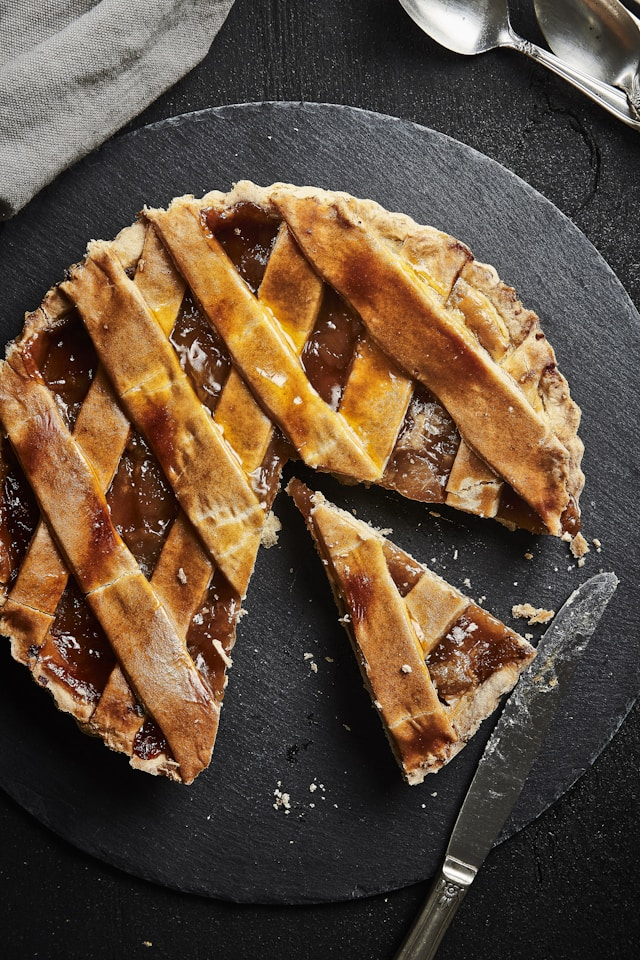
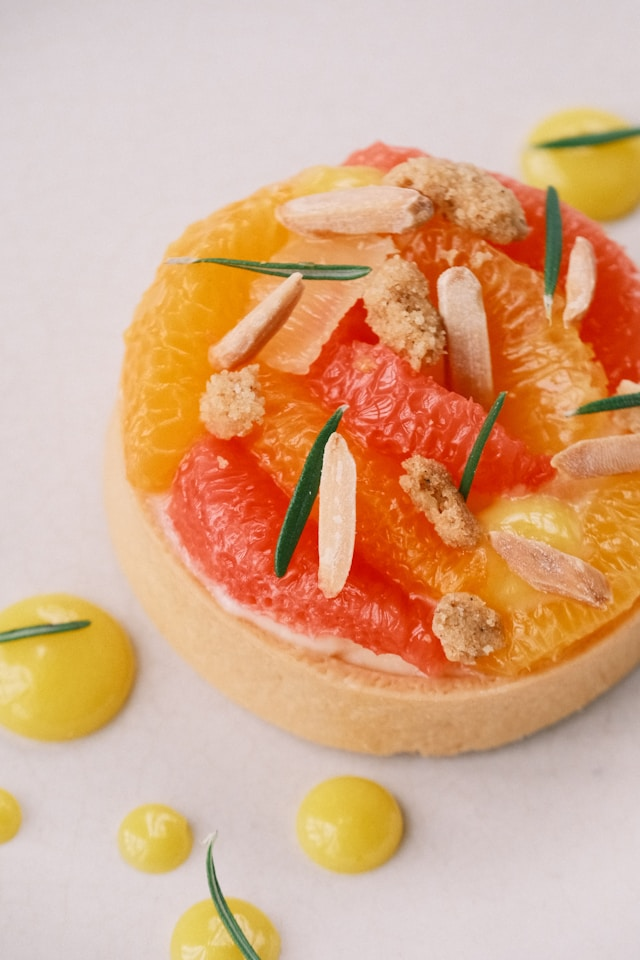
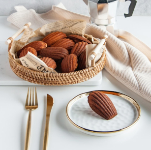
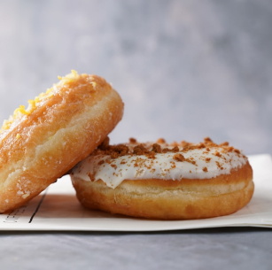

-

티라미수
Tiramisu
부드러운 마스카포네 치즈와 진한 에스프레소가 어우러진 이탈리아 정통 디저트입니다. 촉촉한 빵와 크리미한 치즈 크림 층이 조화를 이루며, 카카오 가루로 마무리해 은은한 쌉싸름함이 매력적입니다.
입안에서 사르르 녹는 부드러운 식감과 커피의 깊은 풍미는 커피 애호가는 물론 디저트 초심자에게도 사랑받는 메뉴입니다. 커피와 함께 즐기면 더욱 잘 어울립니다.
-

호두 파이
Walnut pie
바삭한 파이 크러스트 위에 달콤하고 쫀득한 필링과 고소한 호두를 듬뿍 올려 구워낸 클래식 디저트입니다. 호두의 풍미와 캐러멜라이즈된 필링이 어우러져 깊고 풍부한 맛을 제공합니다.
필링은 버터, 설탕, 계란이 어우러져 쫀득하면서도 부드러운 식감을 자랑하며, 고소한 호두가 씹는 재미를 더합니다. 커피나 홍차와도 잘 어울리는 디저트로, 한 입 베어 물면 달콤한 여운이 오래 남습니다.
-

자몽 타르트
Grape fruit tarte
상큼한 자몽 크림과 바삭한 타르트 쉘이 어우러진 디저트입니다. 자몽 특유의 새콤달콤한 맛과 부드러운 질감이 매력적입니다.
신선한 자몽으로 만든 크림이 타르트의 풍미를 한층 돋워주며, 과하지 않은 달콤함이 특징입니다. 가벼운 디저트를 찾는 분들께 추천드립니다.
-

마들렌
Madeleine
버터의 풍미가 가득 담긴 프랑스 전통 구움과자입니다. 겉은 살짝 바삭하고 속은 촉촉하며, 입안 가득 퍼지는 고소함이 특징입니다.
고급 발효 버터를 사용해 더욱 깊고 풍부한 맛을 느낄 수 있습니다. 차나 커피와 잘 어울리는 간단한 디저트로, 휴식 시간에 가볍게 즐기기에 제격입니다.
-

로투스 크림 도넛
Lotus cream donut
폭신한 도넛 속에 달콤하고 진한 로투스 크림을 가득 채운 디저트입니다. 바삭한 로투스 비스킷 가루가 토핑되어 고소한 풍미를 더합니다.
로투스 비스킷 특유의 깊고 은은한 캐러멜 향이 도넛과 완벽하게 어우러집니다. 달콤한 디저트를 좋아하는 분들께 강력 추천하며, 커피와 함께 즐기면 더욱 잘 어울립니다.